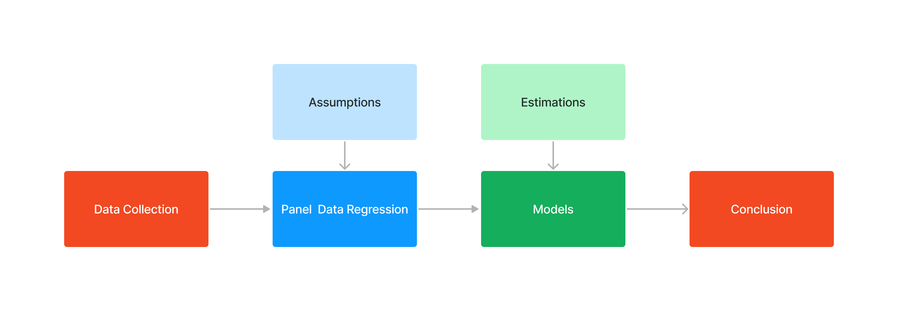

Economics Honor Thesis Research
By Dongsuk Jeong | September 2016 - May 2017
Purpose
• A goal of this research is to see how much changes of residential composition in ethnic diversity affect socioeconomic outcomes such as income per capita and crime rate for the period 1990 and 2000
Methodology
Data Collection
• Collected the data from US Census Data
• Multi group entropy index constructed by John Iceland is used since this research is to find out the impact of ethnic diversity on socioeconomic variables
Panel Data Regression & Assumptions
• Since the relationship between ethnic diversity and dependent variables, crime rates, and income per capita are likely to have unobserved individual effects,
the panel data regression with the fixed effect is used
• Because of limitations of accessing data and many complicated correlations between dependent and independent variables, this also indicates that the panel data model with the fixed effect fit best for this paper
• Assume that unobserved individual effects, such as the natural shock effect, the social cognition effect, and the potential growth, is time-invariant
• Assume that the covariate is uncorrelated with not only current unobserved effect, but also is uncorrelated with all past and future unobserved effect as well (strict exogeneity)
Models & Estimations
• There are two models in this paper, one model is for the total crime rates and the other model is for the income per capita
• Both model shared the same independent variables. independent variables in this models are multi-group index, population density, population, foreign population, education, migration, poverty, and unemployment rate
• Both entropy index and population density indicate a negative relationship in total crime rate model with 0.05 significant level
• The entropy index shows the positive relationship and population density indicates a negative relationship in the income per capita model with 0.05 significant level
• Family Structure and education indicate the statistical significant in the income per capita model at 0.05 level
• The foreign population and unemployment rate shows the statistical significant in the total crime rate model at 0.05 level
Conclusion
• The ethnic diversity is associated with income per capita positively and total crime rate negatively
• Higher population density indicates a negative relationship to crime rate and income per capita
• Unemployment rate take more account with total crime rate, on the other hand, educational attainments have more impact on income per capita
• Since our results indicate the strongly positive relationships between ethnic diversity and income per capita, this carefully implies the positive relationship between ethnic diversity and productivity